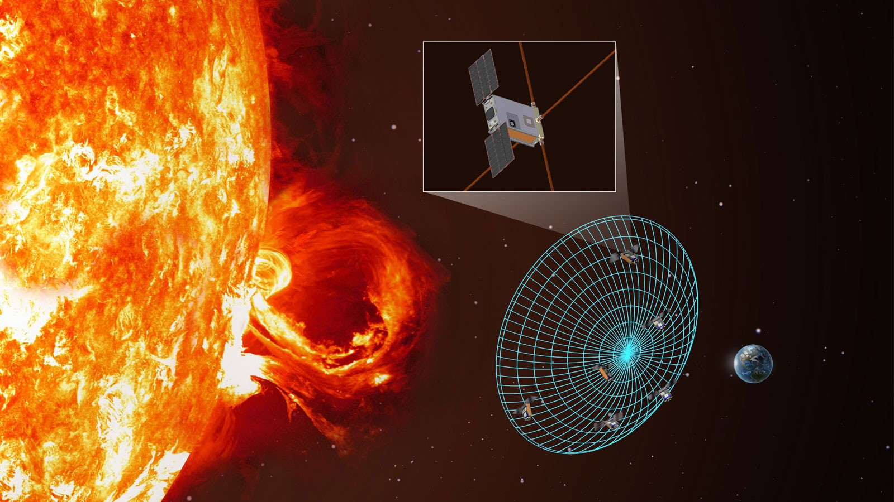

Software and Data Analysis Co-Lead · Jan 2025 – Present
NASA SunRISE Heliophysics Mission
University of Michigan, Ann Arbor — co-leading a software and data-analysis subteam of 10+ engineers supporting NASA's SunRISE heliophysics mission, coordinating requirements and system integration with electrical and mechanical teams behind a 20+ antenna ground array on a live NASA mission.
FX-Correlation & Beamforming Pipeline
Developed and optimized a multithreaded C++ FX-correlation and beamforming pipeline for processing ground-array observations, reducing computational latency by 15%.
Transient Detection & Classification
Designed transient-detection and classification pipelines and maintained a labeled observational database for identifying solar radio bursts in high-noise data, achieving 84% detection accuracy.
Ground-Array Hardware & Workflows
Configured, integrated, and troubleshot ground-array computing hardware and data-processing workflows to support reliable acquisition and analysis of antenna data on a live NASA mission.
Team Leadership
Co-lead a software and data-analysis subteam of 10+ engineers, coordinating requirements and system integration with electrical and mechanical teams supporting a 20+ antenna ground array.